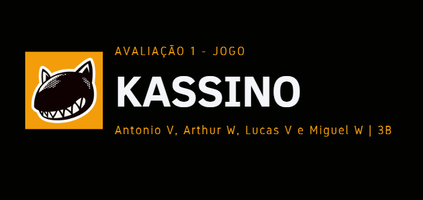
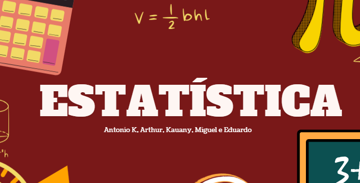

1º Trimestre
Relatório – Filme "Quebrando a Banca"

Descrição: Trabalho em formato de relatório sobre o filme "Quebrando a Banca", abordando conceitos de probabilidade aplicados em jogos e tomada de decisões.
Habilidades desenvolvidas:
- C5: Utilizar probabilidade para analisar e prever situações do cotidiano.
- H30: Identificar padrões e aplicar técnicas de contagem.
- H31: Compreender eventos aleatórios e utilizar probabilidade para prever resultados.
Jogo inspirado no filme "Quebrando a Banca"

Descrição: Desenvolvimento de um jogo baseado no filme "Quebrando a Banca", explorando conceitos de probabilidade de forma prática e interativa.
Habilidades desenvolvidas:
- C5: Aplicar probabilidade para análise e previsão de situações reais.
- H30: Identificar padrões e relações por meio de contagem.
- H31: Compreender eventos aleatórios na previsão de resultados.
2º Trimestre
Estatisticas

Descrição: Slides feitos no canva sobre as estatisticas pesquisadas sobre o tempo de estudo